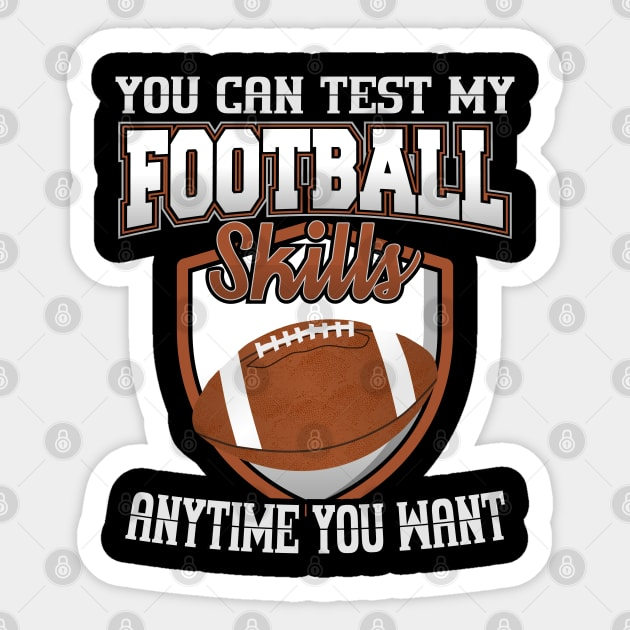

Playing football at higher level is my dream,
Developing football skills requries a combination of physical, technical, and mental abilities.
Players need to have good ball control, passing accuracy,dribbling skills, and tactical awareness,those are my skills in football.
